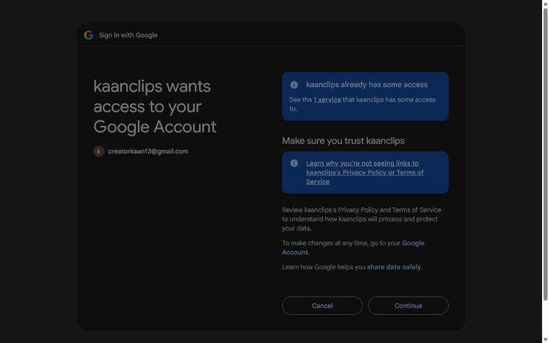
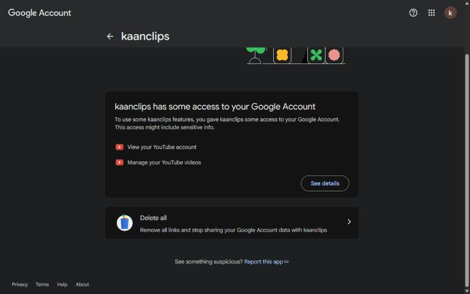

The owner signs in with their own Google account (creatorkaan13@gmail.com, channel "kan"). Requested scopes: youtube.upload and youtube.readonly.

Google Account → Security → Your connections to third-party apps → kaanclips: shows "View your YouTube account" and "Manage your YouTube videos"; "Delete all" revokes access.

The tool is run from the owner's terminal: youtube-check confirms the channel, then the publisher uploads one Short at a time.